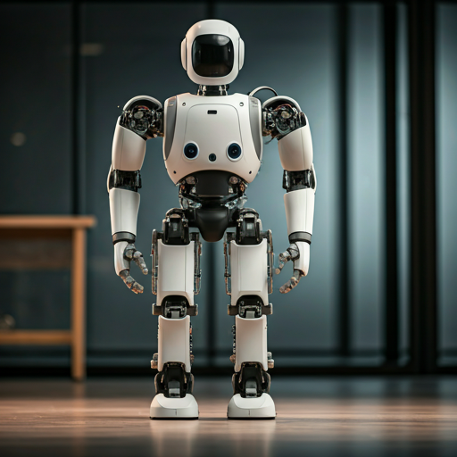

Research • ROS2 • LiDAR
Salisbury University Robotics Lab
Programming a Unitree G1 humanoid robot for construction tasks. Research focuses on ROS2 integration, Euler Angles, and LiDAR point cloud visualization.